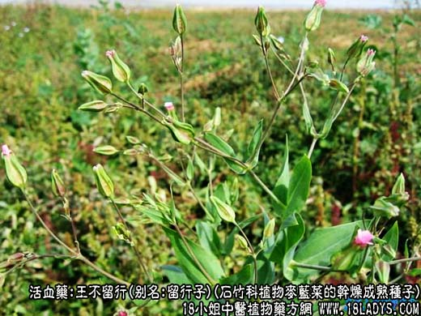
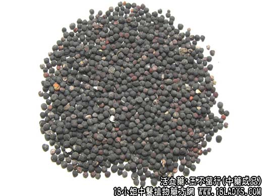
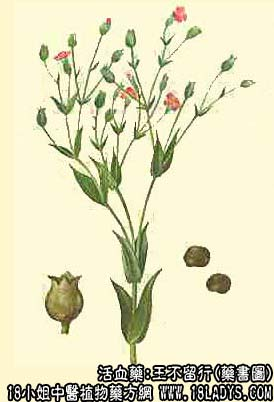

王不留行为常用中药。始载《神农本草经》，列为上品。李时珍说：“此物性走而不住，虽有王命不能留其行”故名，下面我们来了解下王不留行图片以及王不留行的功效与作用。

王不留行源植物图片

王不留行图片

因各地用药习惯不同，商品种类较为复杂，其原植物来源于不用的科属，药用部分有种子，果实及全草的不同。但大多数地区所有，均为石竹科植物麦蓝菜的种子。
别名：王不留、留行子。
来源：为石竹科植物麦蓝菜的干燥成熟种子。栽培或野生。以麦田中生长最多。
植物形态：一年生草本，高30~70厘米，无毛。叶对生，无柄，卵状披针形，长2~8厘米，宽0.5~2厘米，先端渐尖，基部稍连合抱茎，全缘。伞房状聚伞花序项生。花梗细长，下有鳞片状小苞片二枚，花萼连合成卵状圆筒，具五条绿色棱翅，先端五裂，花瓣五枚，倒卵形，淡红色。蒴果为宿存花萼所包，卵形或近球形。种子多数，成熟时黑色。
产地：主产于河北、辽宁、山东、山西、黑龙江、湖北等地，全国大部分地区均有分布。
性状鉴别：种子呈圆球形，直径约2毫米。表面黑色，少数未成熟者为红棕色。用扩大镜观察，可见密布细小的疣状突起，并有一条纵沟，一端有一色浅的点状种脐。质地坚硬，破开后，尅见种皮薄，胚弯曲成环状，子叶二枚，胚乳白色。火炒时膨胀爆裂。气无，味淡。
以子粒均匀，充实饱满，色乌黑者为佳。
主要成分：麦蓝菜含皂甙醣类、薛荔含中肌醇、芸香甙、B—固甾醇、蒲公英赛醇乙等。
功效与作用：催乳、通经、消肿、止痛。
炮制：炒至大部分爆白花。
性味：甘、苦、平。
归经：入肝、胃经。
功能：通经下乳，消肿。
主治：经闭，乳汁不通，痈肿疮毒。
临床应用：1、治乳汁稀少或排乳不畅：以王不留行15g，株猪蹄一只，或配炙山甲、通草、生黄芪、路路通等水煎服，方入通乳汤。
2、治睾丸炎：例如流行性腮腺炎合并睾丸炎可用王不留行、黄皮核、川楝子配清热解毒药如板蓝根等，方如板王消毒饮。
3、治乳痛：用王不流行15g，配蒲公英30g、白芷6g，水煎服，适宜于乳痈初起，尚未化脓者。
使用注意：孕妇和有崩漏者不宜服。
用量：9~30g。
处方举例：1、通乳汤：王不留行15g、炙山甲9g、通草6g、生黄芪15g、路路通9g，水煎服。
2、板王消毒饮：板蓝根12g、王不留行9g、川连9g、黄芩9g、四叶参9g、生地12g、丹皮9g、川楝子6g、黄皮核4g、海金沙9g、甘草3g，水煎服。
注：除正文描述的麦蓝菜种子，在大多数地区做王不留行使用外，部分地区习用的品种还有：
1、桑科隐花植物薛荔的花托（果壳），在广东、广西习用。
2、金丝桃科植物元宝草的全草，在四川部分地区习用。
3、锦葵科植物川黄花稔的全草，在云南（昆明）习用。
4、豆科植物野豌豆及四籽野豌豆等的种子，在江苏、贵州等地习用。其中一野豌豆的种子与麦蓝菜的种子形色近似，唯四籽野豌豆是扁圆球形，体较大，直径3~4毫米，种脐白色；四籽野豌豆是正圆球形，直径2~2.5毫米，种脐棕红。两者均有明显种脐。嚼之有豆腥气。火炒时不膨胀爆裂。
5、本草书籍中，对王不流行的描述，互不一致，可见古代王不留行也不止一种。明《本草纲目》与清《本草疏证》所描述的王不留行系石竹科麦蓝菜，与目前多数地区席习用品香符。关于王不留行的原植物及本草考证已有详细的研究报告发表，见《药学学报》7卷2期65页。
如果您想了解更多关于王不留行，为您推荐如下内容↓↓↓↓